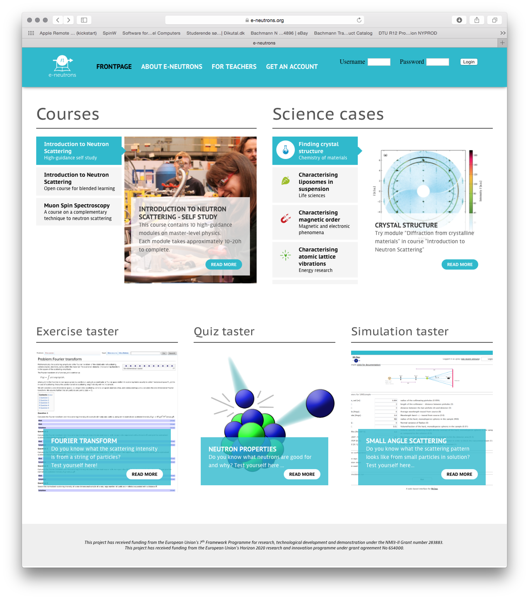

About McStas
Conditions of use
Authors/Contacts
Project funding
Screenshots
Download
Components
Linux Install (deb/rpm)
Mac OS X Install
Unix Install (src code)
Windows Install
Other Downloads (share)
Documentation
McStas manual
FAQ
Known problems
Publications
C Compilers
Other
Tools
Tutorial
McStas - A neutron ray-trace simulation package
|
| The plot shows the intensity of scattered neutrons (red is
highest intensity). The sample is at the center of the sphere with the
neutron beam coming from the left. Clearly seen is the shadowing effect
of the sample causing a lower intensity opposite the beam. Also seen is
the effect of the non-symmetric geometry of the sample, causing lower intensity
directly above and to the side of the sample. |
Recent news
April 6th, 2016: McStas 2.3 released!
Here it is: McStas 2.3 is released and ready for download via http://downloads.mcstas.org/mcstas-2.3
Selected, important highligts from the release are listed below. The full list of changes is also available HERE.
- General:
- As of McStas 2.3, we support a new binary event file format: "MCPL" (Monte Carlo Particle List), developed by Thomas Kittelmann, ESS. The format aims to allow easier interchange of particle event data between monte carlo codes, and read/write functionality has been implemented for MCNP, Geant4 and McStas.
- Interoperability with Mantid has been improved, as OFF-based detectors can be used to define detector geometries in Mantid-oriented simulation runs. See https://github.com/McStasMcXtrace/McCode/wiki/McStas-and-Mantid for more documentation on the use.
- Infrastructure:
- To build McStas from GitHub, you will now need a CMake version >= 3.0
- At the ILL, Emmanuel Farhi has set up a nice web-service called cif2hkl, which allows to generate Laz/Lau structure data files from CIF files. See http://barns.ill.fr/cif2hkl.html
- A new e-Learning infrastructure for neutron scattering has been set up at https://www.e-neutrons.org . Among other things, it features a web-simulator powered by McStas. Once you have signed up, you will have access to many interesting things, among these this "close to complete" list of McStas instruments that can be run on the web: https://www.e-neutrons.org/mcstas-distrib
- Components:
- New component SASview_model.comp by Jakob Garde and Torben Nielsen allows to use SASview scattering kernels from within McStas. See also the test instrument templateSasView.instr
- New components MCPL_input and MCPL_output by Erik Knudsen. Used to read and write MCPL binary event files. See corresponding test instruments below.
- New component Refractor.comp by Emmanuel Farhi and Bob Cubitt, ILL. Implements a single bulk material shape that can be used as a prism or lens.
- PerfectCrystal.comp by Markus Appel, ILL / FAU Erlangen-Nuernberg. Perfect crystal component, primarily for use as monochromator and analyzer in backscattering spectrometers. Reflections are simulated using a Darwin, Ewald or Gaussian profile. Doppler movement of the monochromator is supported.
- MultiDiskChopper.comp by Markus Appel, ILL / FAU Erlangen-Nuernberg. Models a disk chopper with a freely configurable slit pattern. For simple applications, use the DiskChopper component instead.
- Updated version of Sample_nxs from Mirko Boin (HZB), including more nxs material definitions.
- Bugfix to ESS_moderator from Jan Saroun (RESTRAX/Simres): missing focusing/direction cosine inserted. Please note that this component does not implement "engineering reality" and currently uses a coordinate system centered on the moderator assembly. An updated moderator component which references the "Moderator focus coordinate system" will be released later during the spring of 2016.
- Instruments:
- New test instrument templateSasView.instr, documenting use of SASview_model.comp
- New test instruments Test_MCPL_input.instr and Test_MCPL_output.instr, documenting use of the MCPL components
- New test instrument Test_PowderN_Res.instr, demonstrates difference of using 'banana, theta' and 'banana, divergence' in Monitor_nD - and can be used to show influence of sample size on detected line with in diffractometers.
- New test instrument LLB_6T2.instr by Xavier Fabreges, LLB. Model of the LLB 6T2 thermal single crystal diffractometer.
- New ILL_IN13.instr by E. Farhi and A. Dennison, ILL. Models the IN13 Thermal neutron backscattering spectrometer.
- New SAFARI_MPISI.instr by Deon Marais, Necsa. Models the SAFARI instrument 'Materials Probe for Internal Strain Investigations'
- New SAFARI_PITSI.instr by Deon Marais, Necsa. Models the SAFARI instrument 'Powder Instrument for Transition in Structure Investigations'
March 7th, 2016: Most mcstas-2.2a instruments available at e-neutrons.org
If you take a look at this e-neutrons.org page, you will see that it resembles the examples part of a McDoc documentation page - with one exception: The Run simulation links on the right side of the table points to virtual instruments that may be run through the new McStas web frontend.As usual, you must have an account at e-neutrons.org to execute these simulations.
March 3rd, 2016: Announcement of e-neutrons.org, e-learning platform for neutron scattering
Dear all,We are happy to officially announce the availability of e-neutrons.org: An e-learning platform for neutron scattering.
The platform was developed with support from NMI3-II (EU-FP7) and features an introductory course in neutron scattering and muon spin spectroscopy. The courses contain a varied selection of interactive learning material using three main technologies
- A "WIKIbook" built on Mediawiki with various extensions, e.g. for producing mathematical expressions. It is used as the main source of textbook-material
- A Learning Management System (LMS) built on Moodle which , provides exercises, quizzes and evaluation
- A web simulator for the McStas neutron instrument simulation program, allowing users to perform virtual neutron scattering experiments on predefined instruments
To access the e-learning portal, go to https://www.e-neutrons.org, choose "Get an account" and fill in your personal information.
We hope that you will enjoy this new resource and encourage you to try it out!
On behalf of the e-neutrons.org team,
Peter Willendrup
For background information on the platform, the teaching material and
didactical considerations, please read the related article from Neutron News Volume 24, Issue 1, 2013 - DOI:10.1080/10448632.2013.751795.

- - - - - - -
Funding:
The main funding for the project is provided by the European Union's 7th Framework Programme for research, technological development and demonstration under the NMI3-II Grant number 283883 and from the European Union's Horizon 2020 research and innovation programme under grant agreement No 654000.We are also grateful for the financial support recieved from the University of Copenhagen via the "Good Education" and "Education 2016" programmes and from Interreg IV via the OMIC programme.
Development:
The people behind the e-neutrons.org infrastructure areProject leader: Linda Udby, Associate Professor, Niels Bohr Institute, University of Copenhagen
Platform development leader: Peter Willendrup, Senior Research Engineer, Technical University of Denmark
Course content and didactical developers: Julie Hougaard, PhD student, Niels Bohr Institute, University of Copenhagen & Jesper Bruun, Assistant Professor, Department of Science Education, University of Copenhagen
Content management and development: Pia J. Ray, PhD student & Linda Udby, Associate Professor, Niels Bohr Institute, University of Copenhagen
Software engineer: Jakob Garde, Software developer, Technical University of Denmark
Running server administrator: Jörg Pulz, Technical University of Munich
Learning material:
Contents was contributed byUniversity of Copenhagen: Kim Lefmann, Linda Udby, Pia Jensen Ray, Julie Hougaard, Lise Arleth, Kell Mortensen, Bente Lebech, Jesper Bruun
Institut Laue-Langevin, ILL: Andrew Wildes, Alain Filhol, Helmut Schober
Technische Universität München: Jörg Pulz, Jürgen Neuhaus
European Spallation Source, ESS: Markus Strobl
February 16th, 2016: Patch for Tk::wrap errors from mcgui
If you ever encounter an error likeTk::Error###: This shouldn't happen at /usr/share/perl/5.18/Text/Wrap.pm line 84. Tk callback for .toplevel Text::Wrap::wrap at /usr/share/perl/5.18/Text/Wrap.pm line 84 main::run_dialog_create at /usr/local/bin/mcgui line 752 main::run_dialog at /usr/local/bin/mcgui line 824 main::my_system at /usr/local/bin/mcgui line 985 main::menu_run_simulation at /usr/local/bin/mcgui line 1320 main::__ANON__ at /usr/local/bin/mcgui line 1752 Tk callback for .frame1.button Tk::__ANON__ at /usr/lib/perl5/Tk.pm line 251 Tk::Button::butUp at /usr/lib/perl5/Tk/Button.pm line 175- then the fix is to replace run_dialog_create in your local mcgui by follwing the instructions described here.(command bound to event)
Previous news items: 2015, 2014, 2013, 2012, 2011, 2010, 2009, 2008, 2007, 2006, 2005, 2004, 2003,2002, 2001, 2000, 1999, 1998.